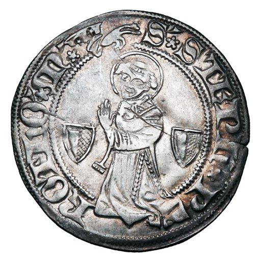

Uma nota de rodapé sobre o Santo Estevão, que aparece nos torneses de Metz:
"O culto de Santo Estevão era bastante popular na idade média, também em Portugal, como o prova a ermida que, já no século XIV, existia na aldeia com nome homónimo, próxima de Benavente. Em Lisboa existia a igreja de Santo Estevão, naturalmente associada ao culto desse Santo, que foi construída no séc. XII e reconstruída no séc. XVIII, após o terramoto. Também em Chaves existe o castelo de Santo Estevão, começado a construir no reinado de D. Afonso Henriques e terminado no reinado de D. Sancho I. As representações do martírio de Santo Estevão são frequentes na idade média, incluindo quase sempre a mão de Deus em gesto de benção, ora inscrita numa cruz, ora a emitir um feixe de luz, ora em mero gesto de benção, como na iluminura (fólio 76r) do manuscrito da Biblioteca Nacional de França (n.a.fr.16251) e no fólio 11v do Saltério de Liège (Morgan Library, MS M. 183), ambos feitos no século XIII. Antes, no século XII, era produzida na Bélgica uma placa de marfim, com a representação do martírio de Santo Estevão, incluindo a mão de Deus em gesto de benção, junto à cabeça do mártir (The Walters Art Museum 71.140). Em 1372 volta a aparecer uma representação do martírio de Santo Estevão, com a mão de Deus incluída, inscrita numa cruz solar, estilizando os dois braços laterais, no fólio 558r de um manuscrito feito em França e ilustrado por Jean Bondol e Jean de Sy, actualmente à guarda da Biblioteca Nacional da Holanda. Em Portugal conhecem-se algumas figurações de Santo Estevão feitas no scriptorium de Alcobaça (Barreira, 2016). Duas delas, de qualidade artística bastante inferior à apresentada pelas representações estrangeiras, narram o martírio, muito embora não incluam a mão de Deus na representação. Sem a mão de Deus incluída, assiste-se à representação antropomórfica de Deus, como por exemplo no fólio 9r do livro de horas de Simon de Varie, feito em 1455 e conservado actualmente na Biblioteca Real da Holanda (KB 74 G37a), onde Deus estende as duas mãos abertas, de onde partem feixes de luz em direcção a Santo Estevão, que reza enquanto é apedrejado. Já em 1515, nas “Da Costa Hours” (Morgan Library, Ms. M.399), feitas na Bélgica e pertencentes a uma família portuguesa da época, se representa o martírio de Santo Estevão (fólio 285v), sendo a “manus dei” substituída pela figura antropomórfica de Deus pai, já em pleno renascimento, levantando a mão direita em gesto de benção e emitindo um feixe de luz em direcção ao santo. Outros casos no entanto existem em que Deus não está representado, como nos códices de Alcobaça. Um bom exemplo é a representação do fólio 126r do livro de horas de Bedford, feito entre 1410 e 1430 e conservado na Biblioteca Britânica (Add MS 18850), onde, para lá do martírio de Santo Estevão, vemos representado também o de São Lourenço, São Dinis e Santa Catarina, todos sem a mão de Deus incluída na iconografia da cena. Daqui talvez se conclua uma ideia natural, a de que a mão de Deus era um ícone da arte cristã, com significado universal e inserido em modelos de representação, podendo no entanto ser preterido ou até substituído por outro ícone com o mesmo significado. Pelo que o ícone da mão de Deus fará parte de um léxico que, naturalmente, também seria conhecido em Portugal."